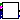
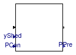

Package with base classes
This package contains base classes that are used to construct the models in Buildings.Controls.DemandResponse.
Extends from Modelica.Icons.BasesPackage (Icon for packages containing base classes).
| Name | Description |
|---|---|
|  BaselinePrediction | Predicts the baseline consumption |
| Normal operation | |
| PartialDemandResponse | Partial block that declares common data for demand response models |
| ShedOperation | Computes the consumption with the shed taken into account |
 Buildings.Controls.DemandResponse.BaseClasses.BaselinePrediction
Buildings.Controls.DemandResponse.BaseClasses.BaselinePrediction
Predicts the baseline consumption

Block that computes the baseline for a demand response client.
This implementation computes the 10/10 average baseline.
This baseline is the average of the consumed power of the previous
10 days for the same time interval. For example, if the base line is
computed every 1 hour, then there are 24 baseline values for each day.
Separate baselines are computed for any types of days.
The type of day is an input signal received from the connector
typeOfDay, and must be equal to any value defined
in
Buildings.Controls.Types.Day.
If a day is an event day, then any hour of this day after the event signal is received is excluded from the baseline computation. Storing history terms for the base line resumes at midnight.
If no history term is present for the current time interval and
the current type of day, then the predicted power consumption
PPre will be zero.
Extends from Buildings.Controls.DemandResponse.BaseClasses.PartialDemandResponse (Partial block that declares common data for demand response models).
| Type | Name | Default | Description |
|---|---|---|---|
| Integer | nIn | 1 | Number of input connections |
| Integer | nOut | 1 | Number of output connections |
| Integer | nSam | Number of intervals in a day for which baseline is computed | |
| Integer | nPre | Number of intervals for which future load need to be predicted (set to one to only predict current time, or to nSam to predict one day) | |
| PredictionModel | predictionModel | Load prediction model | |
| Integer | nHis | 10 | Number of history terms to be stored |
| Type | Name | Description |
|---|---|---|
| Step_in | inPort[nIn] | Vector of step input connectors |
| Step_out | outPort[nOut] | Vector of step output connectors |
| input RealInput | ECon | Consumed electrical energy [J] |
| output RealOutput | PPre[nPre] | Predicted power consumption for the current time interval [W] |
| input RealInput | TOutFut[nPre - 1] | Future outside air temperatures [K] |
| input RealInput | TOut | Outside air temperature [K] |
| input DayTypeInput | typeOfDay[integer((nPre - 1)/nSam) + 2] | Type of day for the current and the future days for which a prediction is to be made. Typically, this has dimension 2 for predictions up to and including 24 hours, and 2+n for any additional day |
| input BooleanInput | isEventDay | If true, this day remains an event day until midnight |
Normal operation

Block that outputs the currently consumed electrical power, which is equal to its input signal.
Extends from Modelica.StateGraph.StepWithSignal (Ordinary step (= step that is not active when simulation starts). Connector 'active' is true when the step is active).
| Type | Name | Default | Description |
|---|---|---|---|
| Integer | nIn | 1 | Number of input connections |
| Integer | nOut | 1 | Number of output connections |
| Type | Name | Description |
|---|---|---|
| Step_in | inPort[nIn] | Vector of step input connectors |
| Step_out | outPort[nOut] | Vector of step output connectors |
| output BooleanOutput | active | |
| input RealInput | PCon | Consumed electrical power [W] |
| output RealOutput | PPre | Predicted power consumption for current hour [W] |
Partial block that declares common data for demand response models

This is a partial block that declares parameters, inputs and outputs that are used by the blocks that compute the demand reponse client.
Extends from Modelica.StateGraph.Step (Ordinary step (= step that is not active when simulation starts)).
| Type | Name | Default | Description |
|---|---|---|---|
| Integer | nIn | 1 | Number of input connections |
| Integer | nOut | 1 | Number of output connections |
| Integer | nSam | Number of intervals in a day for which baseline is computed | |
| Integer | nPre | Number of intervals for which future load need to be predicted (set to one to only predict current time, or to nSam to predict one day) | |
| PredictionModel | predictionModel | Load prediction model |
| Type | Name | Description |
|---|---|---|
| Step_in | inPort[nIn] | Vector of step input connectors |
| Step_out | outPort[nOut] | Vector of step output connectors |
| input RealInput | ECon | Consumed electrical energy [J] |
| output RealOutput | PPre[nPre] | Predicted power consumption for the current time interval [W] |
| input RealInput | TOutFut[nPre - 1] | Future outside air temperatures [K] |
Computes the consumption with the shed taken into account

This model computes the predicted load as the product of the shed control signal and the consumed electrical power.
Extends from Modelica.StateGraph.Step (Ordinary step (= step that is not active when simulation starts)).
| Type | Name | Default | Description |
|---|---|---|---|
| Integer | nIn | 1 | Number of input connections |
| Integer | nOut | 1 | Number of output connections |
| Type | Name | Description |
|---|---|---|
| Step_in | inPort[nIn] | Vector of step input connectors |
| Step_out | outPort[nOut] | Vector of step output connectors |
| input RealInput | PCon | Consumed electrical power [W] |
| input RealInput | yShed | Amount of load to shed. Set to 0.5 to shed 50% of load [1] |
| output RealOutput | PPre | Predicted power consumption for current hour [W] |